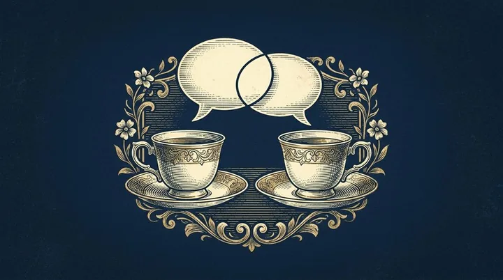
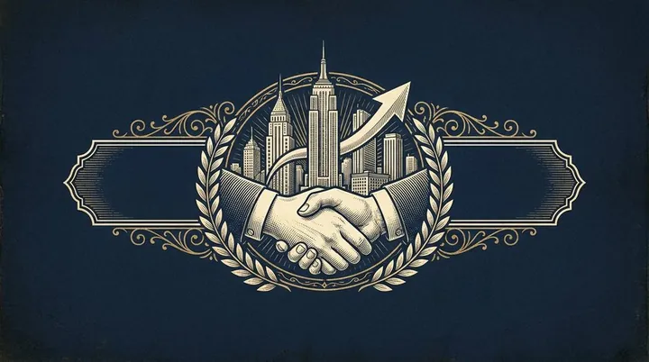
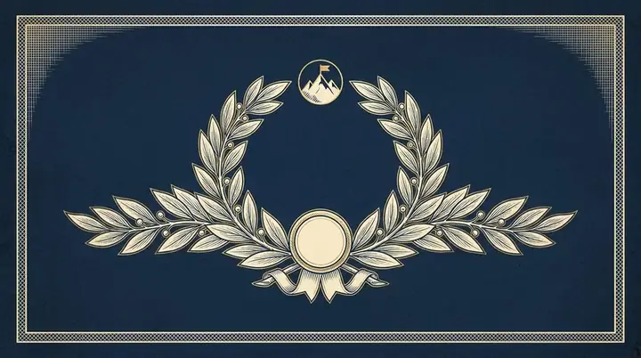
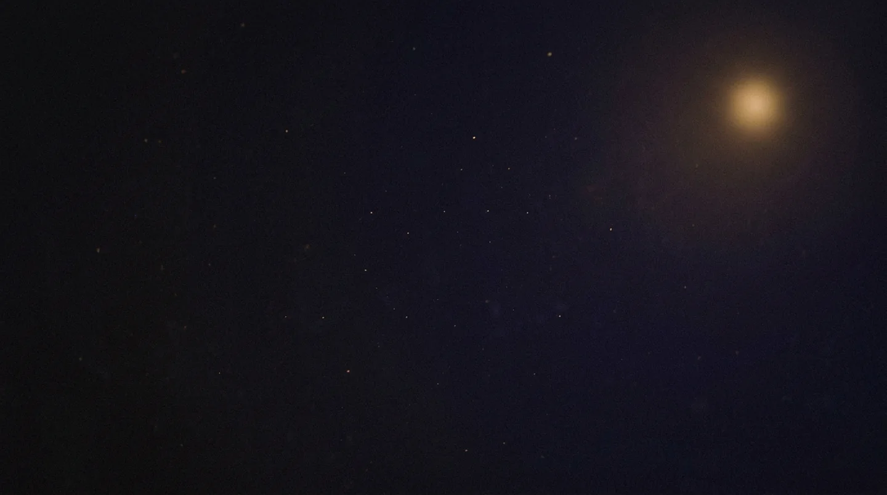

Años de clases de inglés y te congelas en la junta. Aquí lo hablas.
Clases en vivo con profesor, en grupos de máximo 9 o 1 a 1, donde el 80 % del tiempo hablas tú. Para la junta, la entrevista o la certificación que tienes enfrente.
30 preguntas · 15 minutos · resultado al instante · sin crear cuenta
- En vivoCon profesor, por Google Meet
- ≤9Alumnos por grupo, o 1 a 1
- 80 %Del tiempo de clase hablas tú
Un curso para cada meta.
Elige por lo que necesitas conseguir. Tu examen de nivel te dice en qué nivel empiezas.
Inglés General
A1 – C2De cero a dominio, en grupo o 1 a 1.
Desde
$2,500 MXN / mes
Ver el curso
Club de Conversación
A1 – C2Solo hablar, 2 clases por semana.
Precio
MXN / mesConsúltalo por WhatsApp
Ver el curso
Inglés Corporativo
B1 – C1Juntas, correos y negociación.
Desde
$3,000 MXN / mes
Ver el curso
Certificación
B1 – C2IELTS, Cambridge y TOEFL.
Desde
$3,000 MXN / mes
Ver el cursoMes por mes, sin inscripción ni permanencia. Compara planes y precios
De la cocina a la sala de juntas.
Entre clase y clase, practicas con Vesper.
Nuestra app de práctica: lecciones cortas, vocabulario y repaso, del A1 al C2, con Vesper, nuestro gato, como guía. Es gratis aunque todavía no seas alumno. Mira el recorrido: 20 segundos por los seis mundos.

Tu primer paso: el examen de nivel gratis.
Quince minutos, sin crear cuenta y sin compromiso. Sales sabiendo tu nivel y qué curso te toca.
- Haces el examen de nivel
30 preguntas en línea, unos 15 minutos, resultado al instante. Te pide tu correo o tu WhatsApp para mandarte el resultado.
- Un asesor te escribe
Con tu nivel, el curso que te toca y los horarios que hay.
- Entrevista oral con un profesor
Gratis y sin compromiso: confirma tu nivel hablando, no solo con un test.
- Eliges horario y plan, y empiezas
Hablas inglés desde la primera clase.
¿Prefieres hablar con alguien?
Escríbenos por WhatsApp y te contestamos con horarios y precios para tu caso.